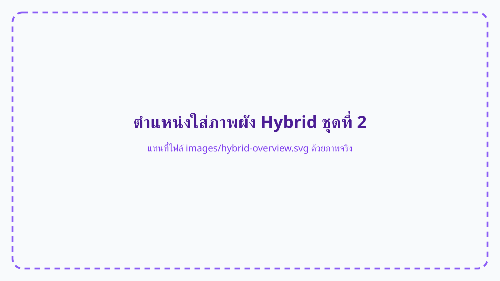

ผังการประชุมแบบ Hybrid
สามารถนำภาพไดอะแกรมโหมด Hybrid มาแทนไฟล์
images/hybrid-overview.svg

1. ภาพรวมการทำงาน
Notebook ทำหน้าที่เป็นตัวกลางสองทิศทาง คือรับภาพจากกล้องวิดีโอผ่าน Capture Card เพื่อส่งเข้า Zoom และส่งภาพหน้าจอ Zoom ออกทาง HDMI กลับเข้าสู่ VAVE SW-42-AP ที่ Input 4
จากห้องไปออนไลน์
กล้อง → HDMI เวที → Capture Card → USB → Notebook → Zoom
จากออนไลน์กลับเข้าห้อง
Notebook HDMI Out → VAVE Input 4 → Splitter → NovaStar → LED
2. อุปกรณ์ที่ใช้
ถ่ายภาพผู้บรรยายและบรรยากาศภายในห้อง
นำสัญญาณภาพจากกล้องมายังจุดควบคุม
แปลง HDMI ให้ Notebook มองเห็นเป็นกล้องผ่าน USB
เปิด Zoom รับภาพกล้อง และส่งภาพหน้าจอออกทาง HDMI
รับภาพจาก Notebook ที่ Input 4 และส่งทาง Output A
Splitter, NovaStar, TV, Projector และ LED P2.5
3. เส้นทางสัญญาณ
3.1 กล้องเข้าสู่ Zoom
3.2 ภาพ Zoom กลับขึ้น LED
4. ขั้นตอนการติดตั้ง
ต่อกล้องเข้ากับ HDMI บนเวที
ต่อ HDMI Out ของกล้องเข้าสู่สายหรือจุดต่อ HDMI บนเวที แล้วเปิดกล้องให้ส่งภาพออก
ต่อสาย HDMI เข้าสู่ Capture Card
เสียบสายจากเวทีเข้าช่อง HDMI Input ของ Capture Card
ต่อ Capture Card เข้ากับ Notebook
เชื่อมต่อผ่าน USB และรอให้ระบบตรวจพบอุปกรณ์
ต่อ HDMI Out ของ Notebook เข้า VAVE Input 4
หาก Notebook ไม่มี HDMI ให้ใช้อะแดปเตอร์ USB-C to HDMI ที่เหมาะสม
5. การตั้งค่า Zoom
- 1. เปิด Zoom และเข้าห้องประชุม
- 2. เลือก Capture Card เป็น Camera
- 3. ตรวจสอบ Preview และมุมกล้อง
- 4. เลือก Gallery View หรือ Speaker View
6. การส่งภาพกลับเข้าสู่ VAVE
ต่อ HDMI Out ของ Notebook เข้า VAVE Input 4 แล้วกำหนดให้ Input 4 ส่งออกทาง Output A ระบบจะแจกจ่ายภาพไปยัง TV, Projector และ NovaStar ตามเส้นทางระบบหลัก
Duplicate
จอ Notebook และจอ LED แสดงภาพเดียวกัน ใช้ง่าย แต่ทุกหน้าต่างอาจขึ้นจอใหญ่
Extend — แนะนำ
ใช้ Notebook เป็นจอควบคุม และย้ายเฉพาะหน้าต่าง Zoom ไปยังจอภายนอก
7. เช็กลิสต์ก่อนเริ่มงาน
8. แนวทางตรวจสอบปัญหา
| อาการ | ตรวจสอบ |
|---|---|
| Zoom ไม่เห็นกล้อง | ตรวจสอบกล้อง สาย HDMI ช่อง HDMI In ของ Capture Card พอร์ต USB และเมนู Camera |
| Notebook มีภาพ แต่ LED ไม่มีภาพ | ตรวจสอบ HDMI Out, VAVE Input 4, Output A, Splitter และ NovaStar Input 1 |
| Monitor NovaStar ไม่มีภาพ | ตรวจสอบเส้นทาง Notebook → VAVE → Splitter → NovaStar |
| Monitor มีภาพ แต่ LED ไม่มีภาพ | ตรวจสอบ NovaStar, สาย LAN, Receiving Card และไฟเลี้ยงจอ LED |
ข้อควรระวัง
ปิดการแจ้งเตือนของ Notebook ก่อนนำภาพขึ้นจอใหญ่ และทดสอบระบบล่วงหน้า 15–30 นาที คู่มือนี้ครอบคลุมระบบภาพเป็นหลัก ส่วนระบบเสียงควรตั้งค่าและตรวจสอบแยกต่างหาก